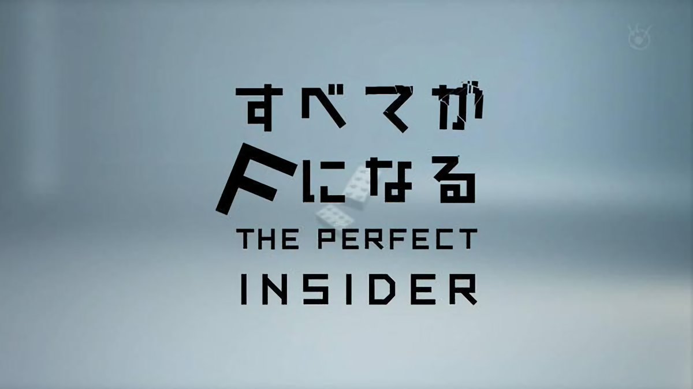
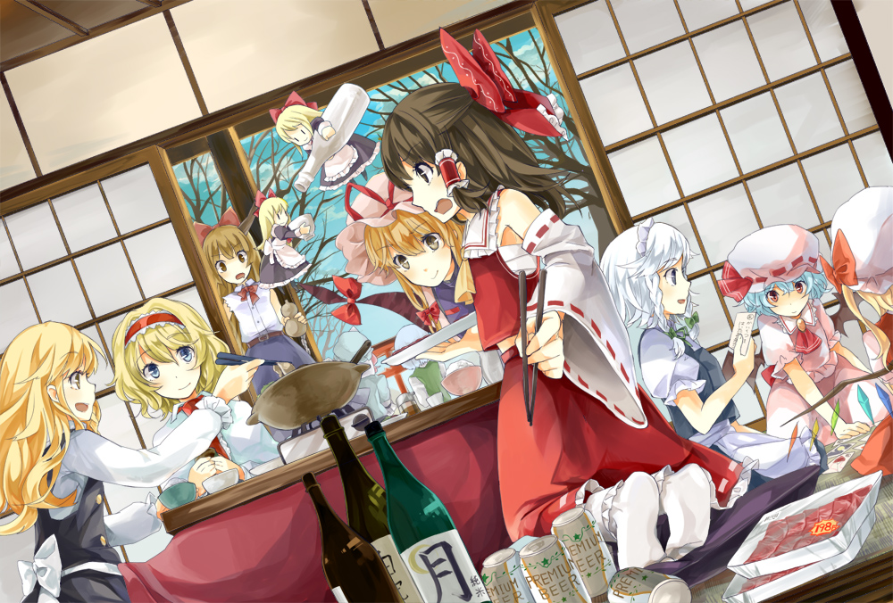
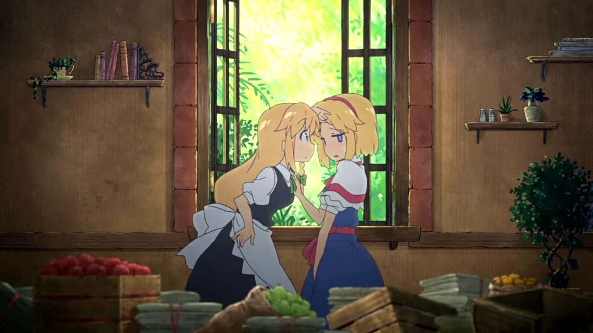

所以这就是人生自建站的第一篇博客
作为人生中第一篇博文，谈一点人生感悟也是在所难免的。
虽然这篇博文是直接这样挂在一个不是私有的临时ip上的。
但是要开始了。
人总是孤独的。追求着别人认同同时又不肯认同别人。
每个人的世界观都是不同的。因此会产生不同的思想。
很喜欢Darker Than Black第二季的主题曲月光的指引。其中的每一句话背后都是人生的哲理。也很喜欢那种明了了一切却仍然继续前进的态度。
黑契里面太多想讲的了。讲不完，讲不尽。比如人类将去往何处； 自我究竟是什么； 什么才是正确的事物。 也许对每个人来说，都有自己的道路要坚持着走下去。就如歌词中唱的那般:
就丢个链接吧： 黑之契约者 (DARKER THAN BLACK)
这两天看了凉宫春日，她的一句话让我感同身受。话不多说，直接上视频。
国庆开始的时候，花一天看完了全部成为F。实在是忍不住。看完感觉世界观又被刷新了一遍。也许这就是所谓好的作品。 上一次被刷新世界观大概是在看了人类衰退之后和来自新世界。
嘛，先说说全部成为F吧。因为是天才少女的世界观，所以确实和常人不一样。但是还是感到了一些共鸣。 在广袤的世界面前，人类实在是太过渺小的存在。即便是我们所认为的天才的发明，在我们所谓的神面前也不过是像蚂蚁搬了一块食物一样的举动罢了。 （喂这可是一部正经的推理番吧喂~
说完了全部成为F，再说说自新世界。自新世界的信息量太大，这里只说很小的一部分。
一是学校的必要性。我原以为学校只是教学之地。其实学校还更起到了一个选择的作用。 筛选出社会需要的人来，给他们更多资源。而对於被筛掉的人，面对他们的可以说是人生的下坡路。 推而广之，其实很多我们想当然的事物都是有存在的理由的。很多事情并没有表面看起来那么简单。
二是历史的黑暗面。历史总是由胜者书写的。所谓的历史不见得是历史。所以历史有时候是一门玄学。 当然我并不是历史无用论，从历史中可以学习到很多前人的教训，而神话传说之类的则更加有趣，非但可以开眼界，还有触发想象力的作用。 不得不说，书写神话的人的想象力远胜我们这些现代人。

在博文的结尾，转一下画风。虽然很久之前就入了东方的大坑，却是直到这几天才接触到梦想夏乡。 东方的设定想象力不亚于古代神话。这也多少是一点欣慰（你欣慰个毛线阿喂~)。 实在是很喜欢那种充满梦幻色彩的，Bright & Shining 的，温暖的夏日的感觉。
贴个图就走。其实说这么多只是为了贴图吧（喂~）
 - • GitHub: Donny-Hikari
- • Mail: donny.hikari@gmail.com
- • Blogs: Donny's Blogs
- • LOFTER: Donny